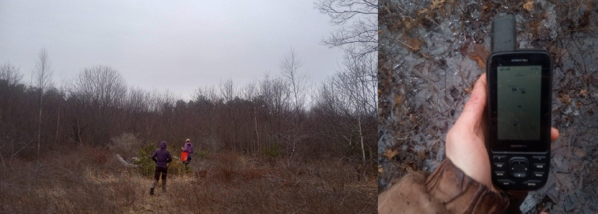

During the spring of 2025, I interned with the U.S. Fish and Wildlife Service at Rachel Carson National Wildlife Refuge in Wells, Maine. Working alongside refuge biologists, restoration ecologists, and biological technicians, I contributed to a range of conservation projects across coastal and shrubland habitats.
The internship introduced me to the practical side of habitat restoration: field monitoring, permitting, species management, restoration planning, and the long-term work of caring for protected landscapes. Although my work moved between several projects, the common thread was learning how ecological knowledge becomes conservation action on the ground.

One major focus of the internship was salt marsh enhancement. I learned about the challenges facing coastal marshes, including agricultural remnants, altered hydrology, culverts, ditching, and sea level rise. I also became familiar with restoration strategies such as ditch removal, ditch plugging, runnelling, and long-term site monitoring.
This work helped me understand that restoration begins long before any visible intervention takes place. Before a marsh can be restored, practitioners must interpret aerial imagery, evaluate hydrologic function, understand permitting requirements, and identify the ecological problems shaping the site.

I also supported the less visible but essential work that happens between field seasons. This included calibrating water level loggers, organizing post-project deliverables for permitting requirements, and learning how restoration timelines are shaped by state and federal review processes such as Permit by Rule and Army Corps permitting.
These tasks helped me see restoration as both ecological and administrative. Successful conservation depends not only on understanding habitats and species, but also on documentation, coordination, monitoring, and long-term accountability.

Beyond salt marsh work, I assisted with New England cottontail habitat restoration and monitoring. I helped care for quarantined rabbits on the refuge, attended field surveys, participated in habitat assessments, and used GPS technology to locate supplemental feeding bunks in Cutts Island, Maine.
Through this work, I learned about the importance of young forest and shrubland habitat, not only for New England cottontails, but for many other species that depend on early successional landscapes. This broadened my understanding of habitat restoration beyond coastal systems and helped me think more deeply about the relationship between species needs, landscape structure, and active management.

Near the end of the internship, I also participated in early-season piping plover monitoring as birds began returning to potential nesting habitat. This work involved documenting date, time, weather conditions, behavior, abundance, and habitat use in sensitive coastal areas.
Moving between salt marsh restoration, cottontail habitat work, and shorebird monitoring showed me how varied conservation practice can be within a single refuge. It also strengthened my interest in restoration ecology, annual monitoring, and the long-term stewardship of habitats shaped by both ecological processes and human impact.
This internship helped me understand that conservation is rarely one project or one species. It is a network of decisions, observations, permits, surveys, relationships, and repeated site visits that gradually shape better outcomes for wildlife and their habitats.